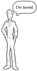
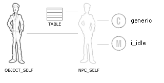

Advanced: Implementing the Idle Response in the Generic Class
1. Overview
The purpose of this tutorial is to show you how the MT scripts handle situations in a very generic manner. Every NPC should belong to the generic class. It's what adds the standard generators to every NPC. These standard generic generators are responsible for calling the function MeRespond(). This function will allow every other NPC Class to respond to the situation.
For example, if the NPC runs into a door, the "Door Blocked" situation is called. If the NPC gets to the end of a combat round and is still engaged in combat, the "Combat" situation is handled.
Of course not all situations are directly related to Bioware's callbacks. The generic class creates a low priority Idle meme. This meme sits at the bottom priority band. When no other memes are active this meme triggers the "Idle" situation. This is a great way to tell NPC classes that they're bored and they should do an ambient animation.
2. Creating the Generic Class
All classes are implemented in a script library. If we're creating a library, like lib_generic, we must make sure that we register the library when the module starts up. Edit the cb_module_load script and add:
|
DelayCommand(0.0, MeLoadLibrary("lib_generic"));
|
Here's the shell of the generic class adding an idle meme. We start by adding an _ini and _go to the class named generic. We'll expand the _ini later if we want any default variables to appear on the NPC.
Next we add the idle meme, into this library. All it does is start the "Idle" response. The meme doesn't care if it's interrupted or completed so it only has a _go function. Have a look:
#include "h_util"
#include "h_library"
#include "h_response"
void generic_ini()
{
 _Start("Initialize class='"+MEME_CALLED+"'", DEBUG_TOOLKIT); _Start("Initialize class='"+MEME_CALLED+"'", DEBUG_TOOLKIT);
_End();
}
void generic_go()
{
_Start("Instanciate class='"+MEME_CALLED+"'", DEBUG_COREAI);
MeCreateMeme("i_idle", PRIO_LOW, -100, MEME_REPEAT | MEME_RESUME);
MeUpdateActions();
_End();
}
void i_idle_go()
{
_Start("Idle", DEBUG_COREAI);
MeRespond("Idle");
_End();
}
void main()
{
_Start("Library name='"+MEME_LIBRARY+"'");
if (MEME_DECLARE_LIBRARY)
{
MeRegisterClass("generic");
MeLibraryImplements("c_generic", "_ini", 0x0100+0xff);
MeLibraryImplements("c_generic", "_go", 0x0100+0x01);
MeLibraryImplements("i_idle", "_go", 0x0200);
_End();
return;
}
switch (MEME_ENTRYPOINT & 0xff00)
{
case 0x0100: switch (MEME_ENTRYPOINT & 0x00ff)
{
case 0xff: generic_ini(); break;
case 0x01: generic_go(); break;
} break;
case 0x0200: i_idle_go(); break;
}
_End();
}
|
|
|
The i_idle meme is currently very dangerous. Can you figure out why? Consider what would happen if you had an NPC with only this class. The i_idle meme would run, which is great, right? But there are no response tables for MeRespond() to act on...
As a result the idle meme wouldn't do anything -- nothing would be added to the NPC's action queue. The MT scheduler would immediately call i_idle_go() over and over again. You would have a script spinning wildly out of control. Remember whenever you write a meme you should never let this happen.
We'll solve this problem in just a bit. Let's continue...
|
|
3. Testing the Generic Idle Situation
Even though that idle meme is dangerous, we can still test this generic class and its idle meme and response table. All we need to do is make a new Memetic NPC and create a new spawn script. This spawn script will register the NPC as a member of the generic class and add a response table:
#include "h_ai"
void main()
{
_Start("OnSpawn name = '"+_GetName(OBJECT_SELF)+"'");
NPC_SELF = MeInit();
MeInstanceOf(NPC_SELF, "generic");
MeAddResponse(NPC_SELF, "Generic Idle Table", "DoNothing", 100, RESPONSE_END);
MeSetActiveResponseTable("Idle", "Generic Idle Table", "");
MeUpdateActions();
_End();
}
|
|
So what this should do is construct an NPC that belongs to the generic class. This class will make an i_idle meme on the NPC. When that meme runs, it will call the function MeRespond("Idle") which will use NPC's currently active response table -- "Generic Idle Table" which will activate the DoNothing response entry.
Unfortunately what we've done also blocks every other class's response from happening. You see, by setting the table on NPC_SELF we have added an override, not a default. What we really want to do is add a default response in the generic class.
|
|
|
The function MeRespond(string sSituation) has a very orderly way of processing responses. It starts at the NPC and then moves to each of its classes, activating each response table. If any response returns a valid object, it stops the progression. In our example the library function DoNothing returns a valid object and causes the NPC to stand around. By returning the valid object it blocks any lesser tables from activating. |
|
4. Adding Default Idle Behaviors
Ok, so adding a response table to the NPC_SELF is an override and adding a response table to a class isn't. Luckily it's really easy to add your response table to your class -- just move it to generic_ini(). Since generic is the first class the NPC is an instance of, it will be the last table to be processed. As the users add the NPC to more and more classes, each class can provide its own responses. Here's the new generic_ini():
void generic_ini()
{
_Start("Initialize class='"+MEME_CALLED+"'", DEBUG_TOOLKIT);
MeAddResponse(MEME_SELF, "Generic Idle Table", "DoNothing", 100, RESPONSE_END);
MeSetActiveResponseTable("Idle", "Generic Idle Table", "*");
_End();
}
|
Take notice of the two subtle changes. First, we're no longer adding the table to the NPC. In fact, when the _ini function is called, our NPC may not even exist yet. Now we're adding the table to the global MEME_SELF -- the object that represents the class. Also, you notice that MeSetActiveResponseTable() is called with the "*" parameter. This could also pass "generic". The asterisk tells the function to figure out the class automatically. This is actually the default value of this function.
4. Test Your NPC
Remember to remove the idle table definition in the spawn script. Once you've done this, you should have a fully working NPC that does nothing. Awful lot of work just to do nothing, huh? Well luckily this nothing is really flexible. Now any class can add responses to their own tables and set a table to response to the Idle situation. Class builders will only need to know how to make a class stud and call MeAddResponse() and MeSetActiveResponseTable().
Hopefully this tutorial has reinforced how classes and response tables work as well as exposed how the generic class is implemented. By doing this work up front, sensible default behaviors can be established and new responses can be dynamically accumulated.